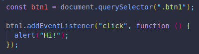

We can use event listeners to pass in 2 arguments, the first is what we are listening for, and the second is the action or callback we want to run when this happens.
This approach allows us to run multiple callbacks on the same event.
WE COULD NOT RUN 2 FUNCTIONS ON THE SAME EVENT BECAUSE THE SECOND WOULD OVERRIDE THE FIRST, LIKE WHEN A CSS STYLE IS DECLARED AT THE END COMPARED TO ONE DECLARED BEFORE IT.(Unless we have both actions declared in a single function.)
With addEventListener we CAN include 2 or more functions.
There's more flexibility this way, and is much more commonly used.